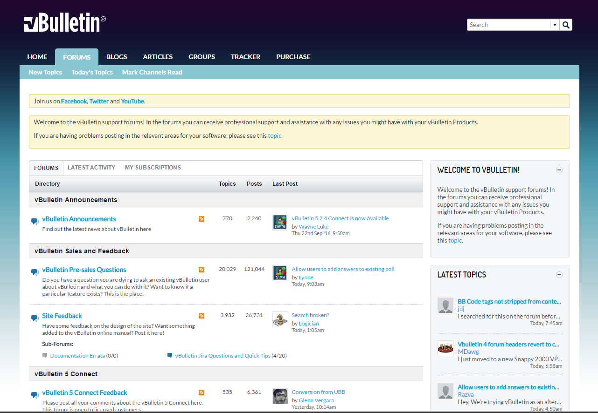

vBulletin Connect is a community platform that is driven by your end users. The system allows you to build custom community sites without coding. Community driven content management allows for content that is always fresh and relevent. Using vBulletin allows you to engage your users in content creation, collation and distribution.
vBulletin 5 has been designed to bring you modern community building and ease of use.
One of the new features of vBulletin 5 Connect is Site Builder. Site Builder is a new way to build and manage your sites. It features drag and drop technology to enable you to build custom pages that fit your needs quickly and easily. Site Builder also includes a Style Generator so you can quickly and easily create a new styles with custom color combinations.
In vBulletin 5, we’ve developed an idea that everything is content. This is built around a new content model involving channels, nodes and the actual content. In this model everything works the same, everything is searchable and everything provides a modern input system. Adding new content should be more intuitive for your users.
vBulletin 5 is customizable through the use of Styles and Language Packs. Styles are made up of HTML and CSS which you can customize within the Administrator Control Panel. Language Packs allow you to translate the text of the user interface to any language.
Live real-time private chat for your members. Chats can be one-on-one or with small groups of people. Each chat is held in its own interface to keep things separate and allow action on other parts of the site at the same.
People are using devices of many different sizes these days. These include phones, tablets and ultra-high density monitors. We’ve included a responsive design in vBulletin 5 that scales to the device being used. No more worrying about mobile styles and trying to configure things for multiple devices. vBulletin adjusts to the screen-size of the user’s device automatically.